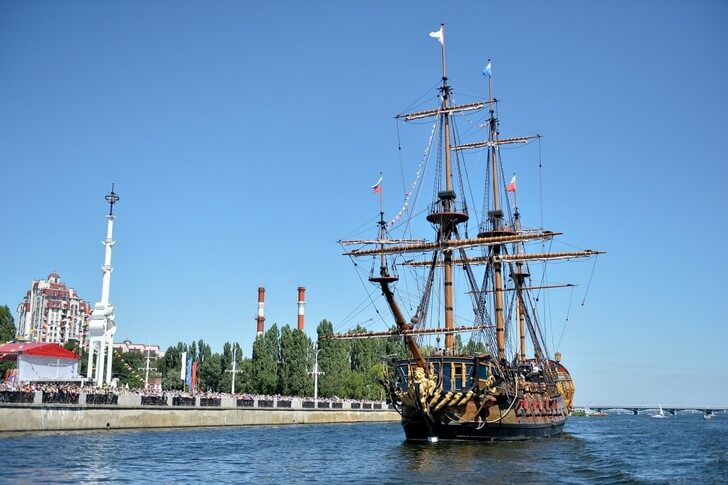

Копия реального судна времен Петра I, стоящая у Адмиралтейской площади. Идея создать корабль-музей пришла в голову воронежским властям в 2009 году. Сначала предполагалось, что над ним будут работать специалисты из Дании, но в итоге конструкцию возвели российские мастера. Музей был торжественно открыт в 2014 году в День ВМФ. Его экспозиция состоит из предметов, повествующих о зарождении и развитии морского флота.
